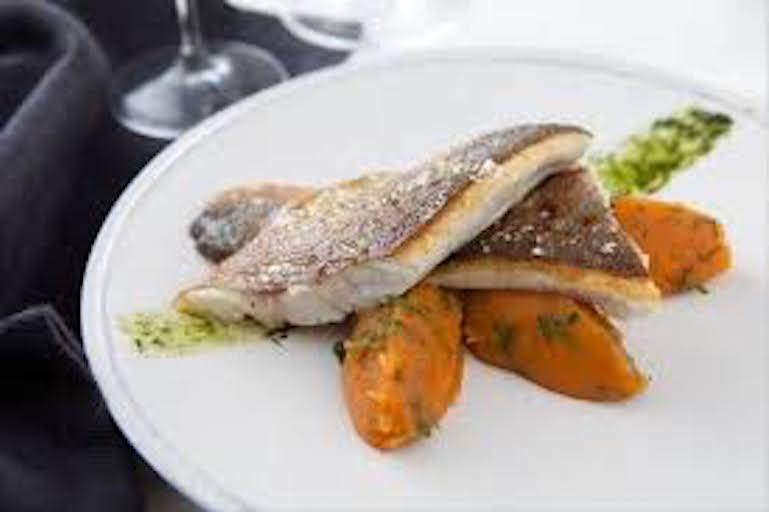

<ion-content>
  <div class= "pageContent">
    <h1>Bar rôti au laurier frais</h1>
    
    <p>Sur une plaque ou un plat allant au four, disposer quelques feuilles de laurier frais verser un filet d'huile d'olive et de gros sel. Disposer le bar, puis l'arroser d'un filet d'huile d'olive et mettre un peu de gros sel sur la peau</p>
    <p>Cuire au four pendant 12min à 240°C</p>
  </div>
</ion-content>
